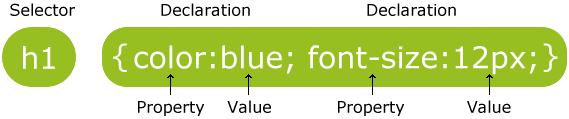
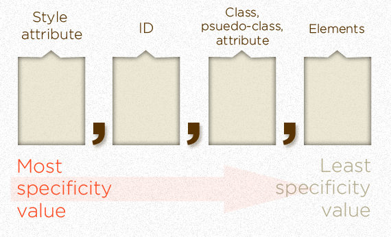
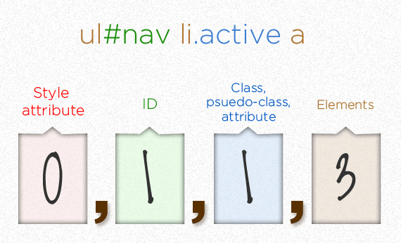
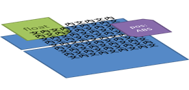

CSS
長這樣
CSS Syntax

怎麼加進 HTML
在 <head> 中加入
或直接把 CSS 寫在 <style> 裡；
<style> 可放在 <head> 或 <body> 均可。
CSS Reset
覆蓋掉瀏覽器預設的 style。
CSS Selectors
Tag, .Class, #Id
Tag, .Class, #Id
div.tall
有 tall class 之 div
#target.highlight
有 lightlight class 且 ID 為 target 之 element
.box.widget
同時有 box 和 widget 兩個 class 之 element
Descendant & Child Selector
.root div: .root 的子孫中為 div 者。.root>div: .root 的孩子裡為 div 者。
Attribute Selector
Pseudo-Class
避免定義相互覆蓋的順序：LoVe HAte
Pseudo-Class
Pseudo-Element
::before 像是一個 <span> 加在 start tag 之後
::after 像是一個 <span> 加在 end tag 之前
Sibling Selector
input + label: input 的弟弟input ~ input[type="submit"]: input 的兄弟姊妹中，是 submit 按鈕的
Simple Styles
background
fonts
CSS Specificity
兩個定義打架
CSS Specificity
Specificity：Selector 精準與否

Source: CSS Tricks
用字典順序比較
打架調解委員會
color同時被.red和div這兩個 selector 定義了- Specificity of
.red: 0,0,1,0 - Specificity of
div: 0,0,0,1 - 0,0,1,0 > 0,0,0,1 故套用
.red對 color 的定義
練習

練習

Debugging
CSS 看起來怪怪的嗎？
- ctrl+shift+i 永遠是好朋友
- 在 jsfiddle 上面做測試，或拿去問人
單位與值
單位
px: 1px = 螢幕上的像素高em: 1em = 當前自行大小%: 父元素值的百分比
CSS color
inherit
某些 CSS 屬性有「inherit」這種值
如：font-size, color，預設為 inherit
inherit (續)
input, textarea, select, button 等元素，樣式不會自動 inherit 自父元素。
Typography
Generic font family
瀏覽器對各種 Generic font family 有預設字體
襯線、無襯線、等寬

monospace 字型的每個字元都一樣寬，適合程式碼排版。
font-family
字體在使用者電腦裡沒有 → 用下一個
最後一個通常放 Generic font family 當捕手。
Web font
Server 提供字體給 Browser 來抓
通常抓下來不能直接裝在電腦上，只能顯示
Google Web Font 英文的 Webfont
@font-face generator 上傳字型檔後，會轉檔為 web font 並提供範例
大小與行高
font-size: 12px + line-height:16px + font-family: sans-serif =
font: 12px/16px sans-serif;line-height ：純數字（幾倍於字體大小） or N px。
(更多)
粗體與斜體
font-style: normal | italic;
font-weight: normal | bold | 數字
底線、刪除線、大寫小字
text-decoration: none | underline | line-through
font-variant: small-caps
Box Model
margin, border, padding

心室肥大
注意 .heart 的寬度與高度
margin 二三事
- 從
border向外算，和其他元件的距離 - inline 元素的
margin-top、margin-bottom會被忽略 - block 元素的
margin-top,margin-bottom密接時，有時只會表現較大的那一個 （collapsing margin） margin-top可能會超出父元素。margin-left和margin-right同為auto時，元素會置中。
border 與 padding
border會佔有空間、推開周圍元素；outline則不會。padding是border與內文的間隙。- 元素的背景顏色會填滿
border內的空間 - 背景顏色的寬 = 元素
width+ 左右之padding；高亦如是。
切換 box model
box-sizing: border-box;
width = border + padding + content
Box & Layout
文字的方向
文字由左邊往右邊，超過邊界就折到下一行
Normal Flow
文字可視為 inline elements。
Inline elements 水平排列，而 block elements 垂直排列。
float
程咬金不走中路，但還是被圍毆。
position: absolute
被無視。
position: fixed
不但被無視，還陰魂不散。
從 normal flow 起飛
把 .outer 用 float or absolute positioning 拉出去展(現)了
3 Positioning Schemes
Normal Flow
display: 預設值, position: static; float: none;
floats
float: left | right
Absolute Positioning
position: absolute | fixed
三角關係
position 覆蓋 float 覆蓋 display
display為none→ 無視position,float-
否則，
position為absolute或fixed→ 無視float(例)。 此時大部分的 inline element 的display變成block（能指定width,height等）。 - 否則，
float不是none→display也會變成block。 - 否則，使用 CSS 內設定的
display。
換句話說：
- 如果用
display: none把元素藏起來，那連 box 都沒有，position和float都不用設。 - 如果設了
position:absolute|fixed就不用設float了。 - 如果設了
float就不用設display了。 - 從 normal flow 中起飛的 element 可使用
width,height等 CSS 規則
細說 display
none: 啥都沒有（因為沒有 box），一丁點都不剩。inline: 一秒變 inline elementblock: 一秒變 block elementinline-block: 當成 inline element 來排版（左到右）
但又有width,height等- table 系列：當成 table 來排版，見對照。
細說 position
element 套用後，起飛變成 absolute positioning:
-
absolute: 相對於第一個非static的 parent -
fixed: 相對於瀏覽器網頁視窗（viewport）
element 套用後，仍身處 normal flow 與世推移：
relative: 不安份亂動static: 預設值
position: absolute
你我都曾經 position: absolute。
細說 position (2)
absolute, fixed, relative 用 left, top, bottom, right 調位置。
Absolute positioning 的元素不會撐開 parent block。
細說 float
套用後自 normal flow 中起飛。
特色：其他 normal flow 圍著它（文繞圖）
不會撐開 parent，要 clear
Z-index
Render 網頁 == 蓋房子
瀏覽器這樣蓋房子 (下項蓋過上項)
- normal flow 中的 block elements
- float elements
- 文字等 inline elements
position!=static的 element

若兩元素同一層，則先蓋的會被壓在下面。
Z-Index
「stacking context」堆起 element，是地基。
z-index 越大，在 stacking context 中越上層。
每個 stacking context 上的房子都這樣蓋：
- stacking context 之背景與邊界
- 負
z-index的 element - 地表：上一頁的東西 +
z-index:0的 element。 - 正 z-index 的 element
stacking context

- stacking context 裡面也可以有子 stacking context。
- position != static 且 z-index != auto 的 element
- opacity < 1 的 eleent 也會被視為一個 stacking context。
原因請參考W3C 標準。 - stacking context 為不可分割的「一層」，
其他 stacking context 沒辦法插進來。
Vertical-align
表格裡的 Vertial align
一般的 vertical align
Cool CSS3
說在前面
CSS3 看似光鮮亮麗，但……
標準還沒有正式完成
瀏覽器各自為政，加上了如 -webkit, -moz 前綴
用 Generator 寫 CSS3。
box-shadow 與 text-shadow
transform 形變
transition 漸變
設定 duration 和 property
漸層
語法猥瑣
每個瀏覽器都不一樣
同瀏覽器每個版本也都不一樣
Ultimate Gradient Editor comes to rescue!
Media Query
"Responsive Web Design"
CSS3 實務
可實用。
側欄
想要做的目標網頁
右欄 #linkList 固定 → 將它自 normal flow 中拿出來。
之前的投影片提到兩種從 normal flow 拿出的方法：
- Absolute positioning: 設置
position: absolute - float: 設置
float: right
position: fixed 與 float: left 不適用於這裡。
側欄（續）
左欄（#intro, #supportingText）隨視窗大小而動
下拉式選單
- 橫向排列的
li元素
- 可以用
float - 可以用
display: inline-block
- 可以用
- 巢狀 list:
<li>裡可以有<ul> :hovermagic
唉咿
又是 IE。
IE 們
- IE6: 不支援 PNG 透明
- IE7: 不支援
inline-block - IE8: 不支援
:checkedpseudo class. - ……族繁不及備載。
條件註解
微軟官方推薦的
只有 IE 會理會
能不能用？

更好用的 CSS
SCSS & LESS

都有：變數、巢狀架構、函數……等
SCSS & LESS (續)
- Compass 函式庫
- 為 Rails 採用
- Bootstrap UI
- 語法較簡潔
- 有 JS 版 compiler